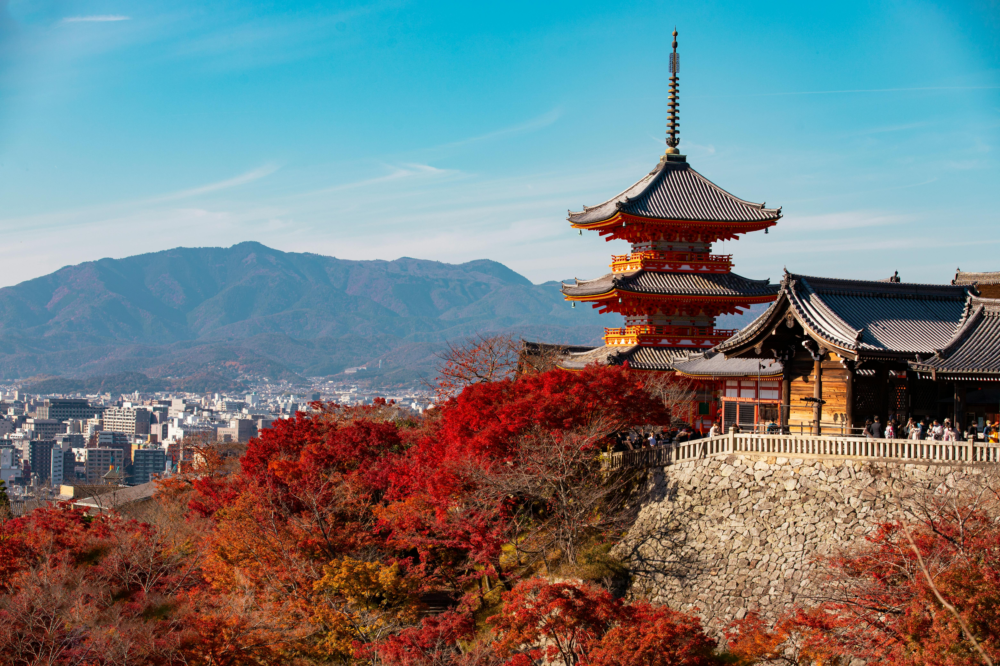
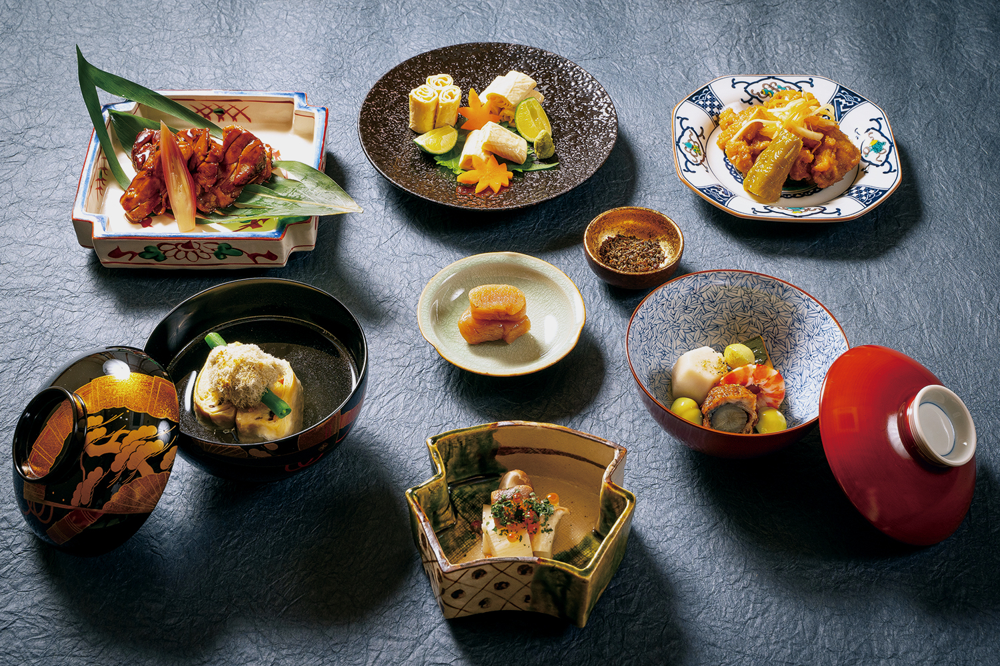

SPOTS
清水寺
站在懸空的清水舞台，俯瞰四季變化的京都市景，是每個旅人對京都的第一印象。這座完全不用鋼釘、僅由 139 根高大圓木支撐的建築，展現了日本古代木造建築的巔峰造詣。

FOOD
京懷石料理
這不只是食物，更是職人對旬味（時令）的極致追求，每一道菜都是一件藝術品。懷石料理講究視覺與味覺的平衡，讓旅人在靜謐的茶道精神中，品嚐大自然的饋贈。

EXPERIENCE
宇治抹茶
作為日本茶文化的發源地，宇治抹茶以其翠綠的色澤與回甘的韻味聞名。走訪百年茶屋，親手刷一份抹茶，配上軟糯的蕨餅，這不僅是味蕾的享受，更是一場洗滌心靈的茶道儀式。